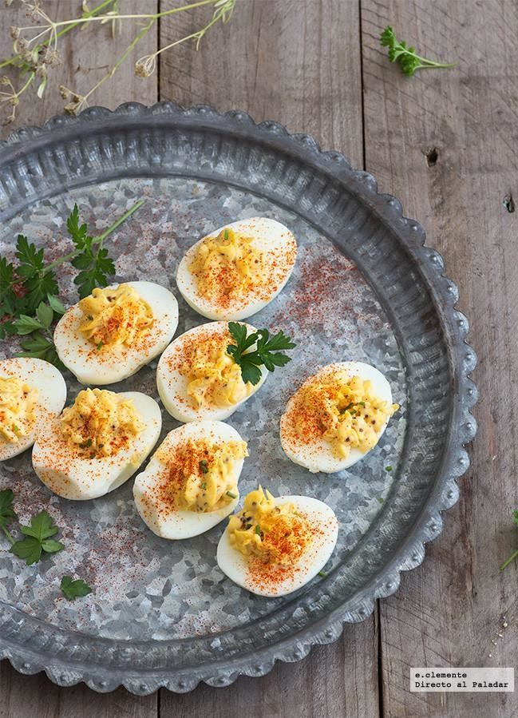

CROQUETAS DE MORCILLA

Ingredientes para hacer croquetas de morcilla
- Huevo
- Harina de trigo
- Aceite de oliva
- Pan rallado
- Morcilla
- Cebolla confitada
- Puré de patatas
Preparación
- Hacer el pure de patata
- Picar la morcilla
- Freir la patata y la moriclla
- Cuando la masa está frita, rebozar todo y freir de nuevo
Back to top
Back to main menu